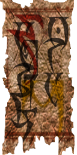
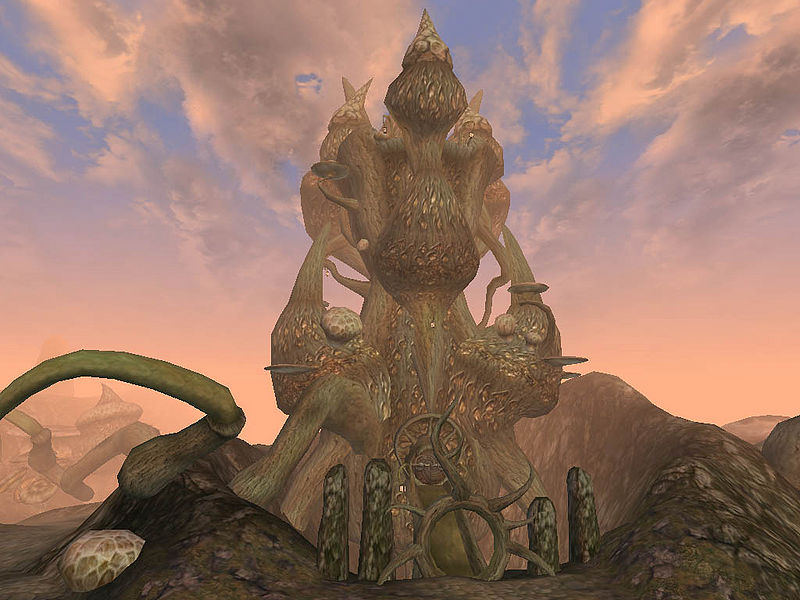
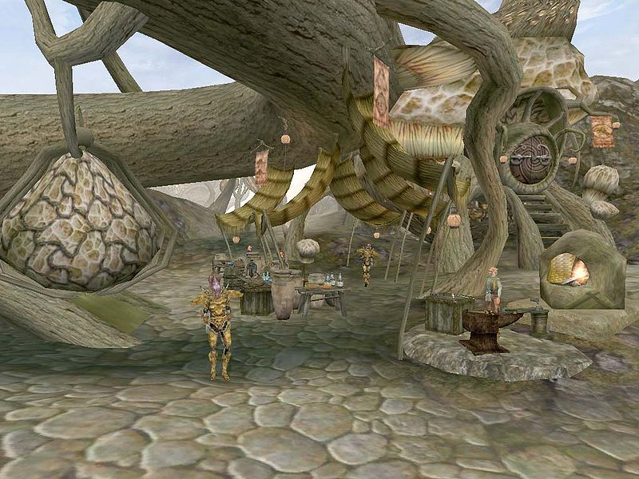
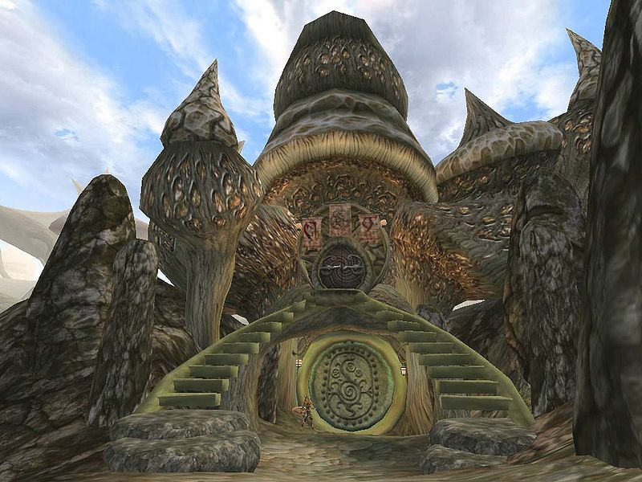
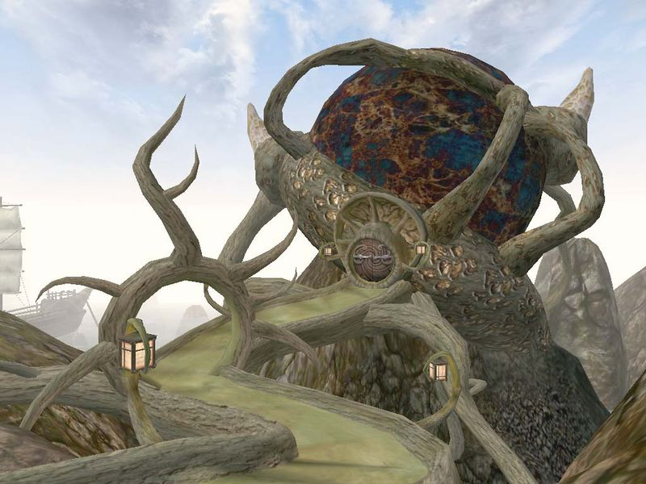

| Sadrith Mora |
| Alignment: Telvanni |
| Region: Azura's Coast |
|
Transport:
Almsivi Intervention:
Divine Intervention:
Boat:
|
Services:
|
|  |
|  Tel Naga, the wizard tower of Master Neloth |
|  Market and Fara's Hole in the Wall |
|  The Gateway Inn |
|  The Council House |
Sadrith Mora (Dark Elvish for "Forest of the Mushrooms") is the district seat of House Telvanni, and home of the Telvanni Council, though only one Telvanni councilor actually lives in town. Sadrith Mora is an island settlement in the Zafirbel Bay, and accessible only by sea and teleportation.
The actual town of Sadrith Mora is built in typical Telvanni style: great, magically-formed organic mushrooms springing from the ground, each being expanded to suit the needs of the inhabitant; one may become a dwelling for a single Dunmer, while others form shops, seaports, or entire inns and taverns. These are grown in a gigantic loop around the tower of Tel Naga, which is the home of Master Neloth. The town itself offers a Morag Tong base, an inn, and a restaurant. North of the Great Market is the Telvanni Council Hall, a large orb supported by giant mushroom stalks. While visitors are technically not supposed to travel beyond the Gateway Inn into the town, nobody really seems to mind. Anyone will serve you, albeit a bit tersely. One place where foreigners are especially welcome is at the Imperial Fort, Wolverine Hall, just to the south.
Small stalls with various wares provided by independent traders line the main street. Single-room mushroom dwellings are the residences of more established merchants. You can buy and sell potions and ingredients at the apothecary of Pierlette Rostorard, the healer Threvul Serethi and the local alchemist, Anis Seloth.
Llaalam Madalas and Urtiso Faryon, located in their respective houses, are spellmakers. The Morag Tong guildhall at the northeastern edge offers training and warrants writs for its retainers. Beds and sundries are available at the Gateway Inn and Fara's Hole in the Wall. There is a slave market at the northern edge of town.
The Council House is located just north of the harbor, behind a small market. It mainly serves as an assembly for the Mouths of their respective Mage Lords. There is an enchanter near the entrance who sells summon scrolls and various soul gems, and a spellmaker.
Tribunal Temple faithful find a shrine tucked away beneath the Telvanni Council House Chambers. Underneath the Tribunal shrine, the Hermitage houses Llunela Hleran, who initiates the construction of your Telvanni stronghold.
The wizard tower of Tel Naga with its typical mushroom shape offers services for Telvanni retainers, if they can reach it. Master Neloth, a member of Telvanni Council, resides at the very top of the tower.
Nearby, Wolverine Hall offers Imperial Cult and Guild services. The Dirty Muriel's Cornerclub, located between Sadrith Mora and Wolverine Hall, is the local base of the Thieves Guild.
None of the Telvanni councilors live in Sadrith Mora directly; you contact them through their Mouths (their representatives) in the Council hall. Master Neloth is a member of Telvanni Council living in his wizard tower of Tel Naga. Dunsalipal Dun-Ahhe is the Morag Tong steward. Ardarume in the west wing of Gateway Inn is a master trainer in Mysticism.
The easiest access to the rest of Morrowind is through the Mages Guild in Wolverine Hall.
Gals Arethi's boat, the Elf-Skerring at the harbor just beyond the Gateway Inn can ferry you to Tel Branora and Ebonheart in the south and Tel Mora and Dagon Fel in the north. The boat from Vos is one-way only.